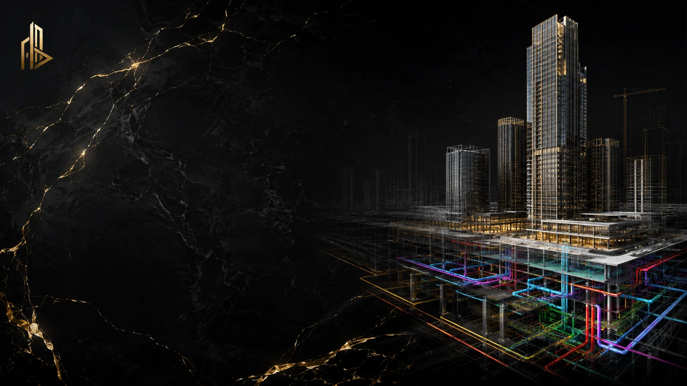
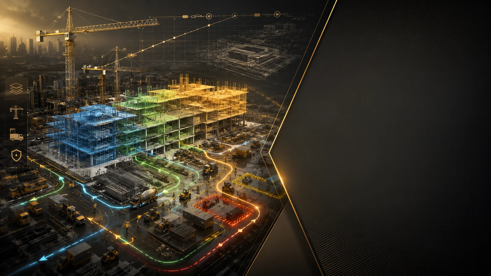

BIM • 4D • 5D • NEW CAIRO
AMAN TOWERS
PROJECT CONTROL THROUGH DIGITAL INTELLIGENCE.
Residential + Administrative • New Cairo, Egypt
THE OPPORTUNITY
MOVE BIM FROM MODEL PRODUCTION
TO PROJECT DECISION-MAKING.
Aman Towers is positioned as a multidisciplinary digital-delivery case: architecture, structure and MEP are coordinated in one model environment; 4D connects the model to construction sequence; 5D connects quantities and cost intelligence to design decisions.
Project-specific metrics on this page are client-supplied inputs and should be checked against the final project report before public publication.
COORDINATE
Federate architecture, structure and MEP to expose interfaces before they become site instructions, RFIs or rework.
4D / TIME
Link model elements to programme activities to test phasing, access, logistics, temporary works and milestones.
5D / COST
Connect quantities and cost intelligence to design decisions so commercial consequences can be discussed while change is still manageable.

4D / CONSTRUCTION SEQUENCE
BUILD VIRTUALLY
BEFORE BUILDING ON SITE.
4D makes the programme spatial. It allows the team to see when floors, systems, cranes, access routes and work zones collide — before the collision becomes physical.
5D / COST INTELLIGENCE
MAKE COST VISIBLE
WHILE THE DESIGN CAN STILL CHANGE.
Model-based quantities create a clearer conversation between design, procurement and commercial teams. The point is not a prettier dashboard; it is earlier understanding of consequence.
CLIENT-SUPPLIED OUTCOME TARGETS
CONTROL IS MEANINGFUL
ONLY WHEN IT CHANGES THE OUTCOME.
NEXT PROJECT
DON'T WAIT FOR THE SITE
TO REVEAL THE PROBLEM.
Bring BADR into the project early enough to coordinate the design, test the sequence and understand cost consequences before they become site events.
START THE PROJECT CONVERSATION ↗